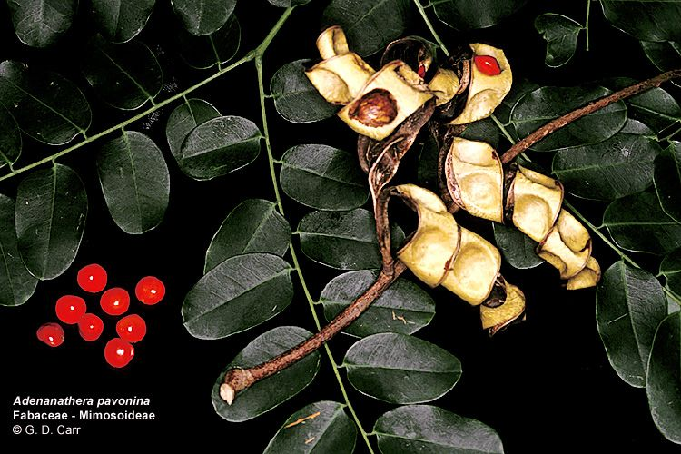
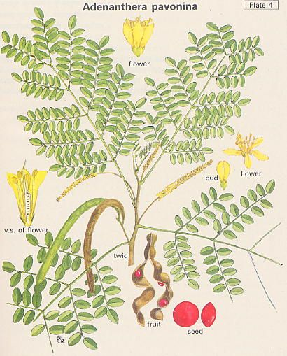

Adenathera
pavonina Linn.
----- Taxonomic Details

----- Correct Name
----- Classification
----- Synonyms
----- Common Names
Other Biological Details
----- Habit and Habitat
----- Diagnostic Features
----- Reproductive Biology
---------- Breeding System
---------- Phenology
---------- Pollinators
---------- Seed Biology
----------Seed Germination
------ Cultivation
----- Major Pests and Diseases
Economic Potential and Uses
----- Parts Used
----- Uses
----- Harvesting Practices
----- Produce and Products
----- Chemistry
----- Processing Techniques
----- Other uses
----- Economic Potential to the
Country
----- Export Potential
Miscellaneous Information
Literature
Taxonomic Details
Correct Name
: Adenathera
pavonina Linn.

Family : Leguminosae
Synonyms :
Common Names :
English: Coral wood, Red bead tree, Red wood
Sanskrit: Kunchandana,
Ksharaka,Kucandanah,
Hindi: Badi ghumchi, Badi gumchi, Baragunci, Barighumchi, Barigumchi, Raktakanchana
Bengali: Rakta
kambal, Rakta-Kanchan, Raktachandana, Rakyakanchan, Ranajaka, Ranjana
Malayalam: Manjadi.
Kanduri batang, Mancati, Manchadi, Manchadi, Manjadi,Red
Sandalwood, Gold Coast, Red woodtree,Saga, Sem
Tamil: Anikundumani,
Anaikundimani, Ani kundamani, Manjadi,Sem, Tilagam, Tilam, Yanai kuntumani
Telugu: Bandi
guruvenda, Bandi gurivenda, Bandi guruvenda, Bandigurivenda, Bandiguruginja,
Bandigurvina, Enugaguruginji, Gurivenda, Mansenikotta, Peacock Tree(Gold Coast),Pedda-guruvenda,
Peddaguriginja
Marati:Tamraka, Tamrakah, The Red wood tree, Thorla goonj, Thorla Gunj,Thorla-gunj,Thorlagunj,
Thorligunj, Val
Kannada: Manjett,
Ane golaganjii, Dodda gulagunji, Manjadi, Manjatti,
Back to Top
Other
Biological Details
HABIT & HABITAT
A
moderate-sized deciduous tree,
60-80' in height and 7-8'
in girth, with linear narrow pods, 6-8" long, twisting while opening and
exposing the hard, shining scarlet seeds. It is found in the eastern sub-Himalayan
tract, in the Western Ghats, in Burma
and in
the Andamans. The tree grows
well in moist areas. It is often planted
along roadsides, especially in southern India.
BioticZone: Eastern Himalayas,Eastern Sub-Himalayan Tract,Konkan plain,none,SubHimalayan
tracts,Tropics,Western Ghats and Western peninsular India.
Availability :
Misc: Alibag fort, Bombay,Kolaba fort, Manasagangotri, Near Dawki,
Planted,Regional
Research Station, Brahmavar,
Country: Asia, Burma, Ceylon, China, India, Malay Islands, Malaya, Malayasia,
Philippines,S.E.Asia, Sri Lanka, Timor,
Zone: Central, East, Islands, North, North East, South and West,
State: Andaman & Nicobar, Assam, Goa Daman Diu, Gujarat, Karnataka, Kerala,
Madhya Pradesh, Maharashtra, Meghalaya, Sikkim, Tamil Nadu and West Bengal,
District: Andaman, Bhopal, Bombay, Chandrapur, Chengalpattu, Coimbatore,
DakshinKannada, Jowai, Mysore, Raigad, Ramnathapuram, Tiruchchirappalli, Tiruchi, Trichurapalli and Uttar Kannada
Status :
Back to Top
DIAGNOSTIC FEATURES
A large tree. Leaflets many, ovate-oblong
about 1 in long. Pods curved, with beautiful shining scarlet seeds.
Back to Top
REPRODUCTIVE BIOLOGY
Flowers small, pale yellow, conspicuous.
Breeding System :
Phenology :
Flowering occurs during December - March and also during March-May.
Pollinators:
Seed Biology :
Seed Germination:
Cultivation:
The
tree grows well in moist areas and is
easily
propagated
by
cuttings.
Back to Top
MAJOR PESTS & DISEASES
Pests:
Diseases:
Back to Top
Economic
Potential and Uses
Parts used::
Wood, Seeds.
Uses:
Harvesting Practices
Produce and Products :
Oil, seeds,
wood.
Chemistry :
The
seeds yield 14% of a fixed oil.(d150
0.9168; n60º , 1.4570; sap. Val.,181.4; iod.val.,87.9 and acid val.,
0.56)
Lignoceric
acid is present to the extent of 25% in the oil or 2.24% by weight of the seeds.
Back
to Top
Processing Techniques
Back
to Top
Other Uses
-
The
heartwood is red and is reported to be used as a substitute for true red
sandalwood (Pterocarpus santalinus).
The wood is used in south
India for building purposes and for cabinet-making. A paste prepared from
the powdered wood is used for applying caste marks.
- The
oil may therefore be used for preparing the acid. The seeds are used
as jeweler's weights and as beads.
-
The heartwood is red and is reported to be used as a substitute for true red
sandalwood (Pierocarpus santalinus).
- The wood is used in south India for
building purposes and for cabinet making. A paste prepared from the powdered
wood is used for applying caste marks.
- Used in general construction purposes , and in cabinet
and furniture making.
- It gives a red dye and seeds are worn as ornaments.
Back
to Top
Economical
Potential to the country
Back
to Top
Export Potential
Back
to Top
Miscellaneous Information
Back
to Top
Literature
- Mayuranathan, P.V.(1929). The Flowering Plants Of Madras City and Its
Immediate Neighborhood. The Superintendent, Government Press, Madras. P: 107.
- Flora of Taroba National Park,S.K.Malhotra & S.Moorthy,1992,ATREE,Hebbal,Bangalore
- Flora of the Presidency of Bombay,vol 1,Theodore Cooke,C.I.E,Botanical
Survey of India, Calcutta,1967,Libray,ATREE, Hebbal, Bangalore.
- The
wealth of India, A Dictionary of Indian Raw Materials and Industrial
Products, Vol. I. A-By, Publications and Information Directorate, CSIR, New
Delhi, India, 1948
Back to Top
.jpg){kind=link}